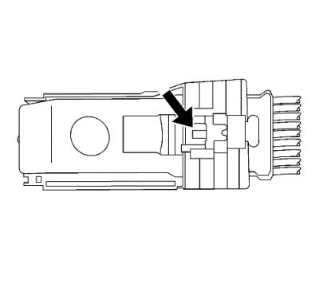
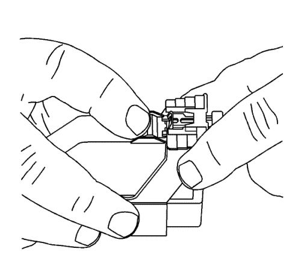
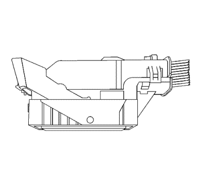
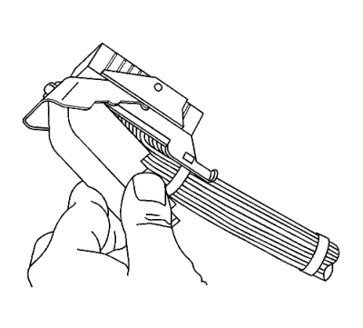
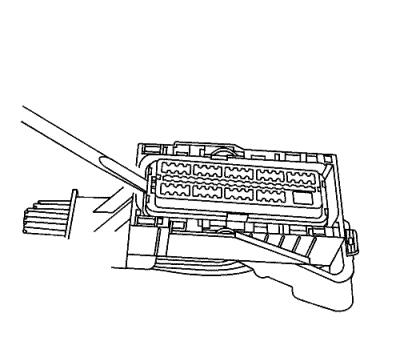
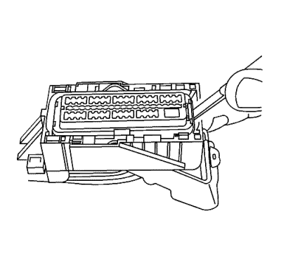
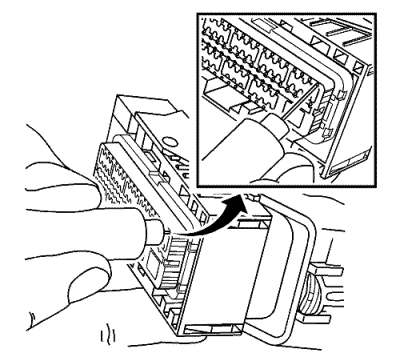

Conectores Molex
Herramientas especiales
Si desea informarse sobre herramientas regionales equivalentes, consultar Herramientas especiales .
Procedimiento de extracción de terminales
- Coloque el seguro de posición del conector (CPA) en la parte superior de la tapa del cable. Deslice el CPA hacia delante.

- Deslice el bloqueo de la palanca hacia delante mientras mantiene pulsada la lengüeta de desbloqueo del bloqueo de la palanca.

- La palanca debe estar en la posición totalmente hacia delante.

- Separe el conector del componente.

- Extraiga la tapa utilizando una herramienta de punta plana para liberar las lengüetas de bloqueo de la tapa y levantar la tapa.
- Corte la envoltura de sujeción que sujeta los cables al cuerpo del conector.

- Utilice una herramienta pequeña de punta plana para levantar un lado de la pieza frontal a la posición de fase previa. Cuando la pieza frontal está en la posición de fase previa, la pieza frontal estará elevada por encima del cuerpo del conector la longitud del escalón de la pieza frontal.

- Utilice una herramienta pequeña de punta plana para levantar el otro lado de la pieza a la posición de fase previa. Si la pieza frontal es más alta que el primer escalón de la pieza frontal, empuje con cuidado hacia abajo la pieza frontal hasta que encuentre resistencia del cuerpo del conector, debe sentir como la pieza frontal se encaja en su posición.

- Introduzca la herramienta EL-38125-213 en el pequeño orificio de liberación de terminal de la pieza frontal y tire con cuidado de la parte de atrás del cable.
Reparación de cable con terminación
- Extraiga el terminal.
- Encuentre el cable con terminación adecuado.
- Utilice los casquillos de empalme adecuados en función del tamaño.
- Consultar Empalme de hilos de cobre usando casquillos de empalme .
Procedimiento de sustitución de terminales
Una vez engarzado el terminal en el cable, realice el siguiente procedimiento para sustituir el terminal.
- Deslice el nuevo terminal en la cavidad correcta en la parte posterior del conector.
- Empuje el terminal dentro del conector hasta que se bloquee en su sitio. El terminal nuevo debe estar a nivel con los demás terminales. Para asegurarse de que el terminal está bloqueado en su sitio, tire suavemente del cable.
- Para montar el conector, realice a la inversa el procedimiento de desmontaje del conector.
| © Copyright Chevrolet Europe. All rights reserved |